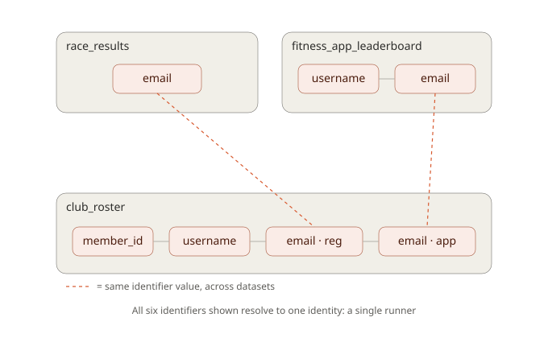

Entity resolution across multiple, separately maintained data sources - tag identifier columns, link records that share an identifier, and collapse everything into a single master ID per real-world entity (e.g. person, project).
Usage
See vignette("idmapper") for a worked example (synthetic data) showing why this is worth the extra machinery over a plain left_join() - specifically, resolving two records that share no identifier directly but are linked transitively through a third dataset.

library(idmapper)
init_id_envs(c("person", "project"))
dataset_a <- dataset_a %>%
mark_id(email, graph = "person", type = "email") %>%
mark_id(uid, graph = "person", type = "uid") %>%
add_to_identity_graph()
dataset_b <- dataset_b %>%
mark_id(c(email_from_hr, email_from_email_list), graph = "person", type = "email") %>%
mark_id(staff_id, graph = "person", type = "staff_id") %>%
add_to_identity_graph()
generate_master_identity_table()
dataset_a2 <- dataset_a %>% join_master_ids()
dataset_b2 <- dataset_b %>% join_master_ids()
# both now carry a person_UID column; rows that share an identifier
# (directly, or transitively through a third dataset) get the same UIDPackage structure
| File | Contents |
|---|---|
R/state.R |
Internal identity-graph storage, init_id_envs()
|
R/mark-id.R |
mark_id() |
R/build-graph.R |
add_to_identity_graph() |
R/master-table.R |
generate_master_identity_table(), get_master_table()
|
R/join-ids.R |
join_master_ids() |
R/filter-ids.R |
filter_by_existing_identities() |
R/utils-pipe.R |
Re-exports %>%
|
tests/testthat/ |
Regression tests against small synthetic data |